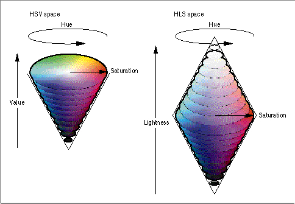
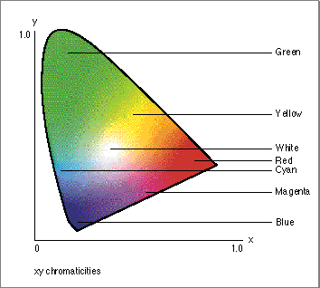
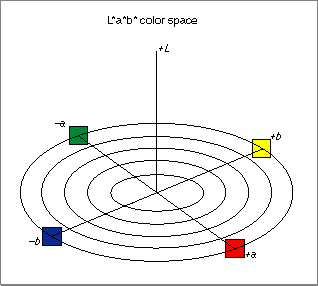

Legacy Document
Important: The information in this document is obsolete and should not be used for new development.
Important: The information in this document is obsolete and should not be used for new development.


Color Spaces
A color space is a model for representing color in terms of intensity values; a color space specifies how color information is represented. It defines a one-, two-, three-, or four-dimensional space whose dimensions, or components, represent intensity values. A color component is also referred to as a color channel. For example, RGB space is a three-dimensional color space whose components are the red, green, and blue intensities that make up a given color. Visually, these spaces are often represented by various solid shapes, such as cubes, cones, or polyhedra.The ColorSync Manager directly supports several different color spaces to give you the convenience of working in whatever kind of color data most suits your needs. The ColorSync color spaces fall into several groups, or base families. They are
All color spaces within a base family differ only in details of storage format or else are related to each other by very simple mathematical formulas.
- gray spaces, used for grayscale display and printing
- RGB-based color spaces, used mainly for displays and scanners
- CMYK-based color spaces, used mainly for color printing
- device-independent color spaces, used mainly for color models
- named color spaces, used mainly for printing and graphic design
- heterogeneous HiFi color spaces, also referred to as multichannel color spaces, primarily used in new printing processes involving the use of gold plate and silver, and also for spot coloring
Gray Spaces
Gray spaces typically have a single component, ranging from black to white, as shown in Figure 3-1. Gray spaces are used for black-and-white and grayscale display and printing.RGB-Based Color Spaces
The RGB space is a three-dimensional color space whose components are the red, green, and blue intensities that make up a given color. For example, scanners read the amounts of red, green, and blue light that are reflected from an image and then convert those amounts into digital values. Displays receive the digital values and convert them into red, green, and blue light seen onscreen.RGB-based color spaces are the most commonly used color spaces in computer graphics, primarily because they are directly supported by most color displays and scanners. RGB color spaces are device dependent and additive. The groups of color spaces within the RGB base family include
- RGB spaces
- HSV and HLS spaces
RGB Spaces
Any color expressed in RGB space is some mixture of three primary colors: red, green, and blue. Most RGB-based color spaces can be visualized as a cube, as in Figure 3-2, with corners of black, the three primaries (red, green, and blue), the three secondaries (cyan, magenta, and yellow), and white.HSV and HLS Color Spaces
HSV space and HLS space are transformations of RGB space that can describe colors in terms more natural to an artist. The name HSV stands for hue, saturation, and value, and HLS stands for hue, lightness, and saturation. The two spaces can be thought of as being single and double cones, as shown in Figure 3-3.Figure 3-3 HSV color space and HLS color space
 The components in HLS space are analogous, but not completely identical, to the components in HSV space:
- The hue component in both color spaces is an angular measurement, analogous to position around a color wheel. A hue value of 0 indicates the color red; the color green is at a value corresponding to 120, and the color blue is at a value corresponding to 240. Horizontal planes through the cones in Figure 3-3 are hexagons; the primaries and secondaries (red, yellow, green, cyan, blue, and magenta) occur at the vertices of the hexagons.
- The saturation component in both color spaces describes color intensity. A saturation value of 0 (in the middle of a hexagon) means that the color is "colorless" (gray); a saturation value at the maximum (at the outer edge of a hexagon) means that the color is at maximum "colorfulness" for that hue angle and brightness.
- The value component (in HSV space) and the lightness component (in HLS space) describe brightness or luminance. In both color spaces, a value of 0 represents black. In HSV space, a maximum value means that the color is at its brightest. In HLS space, a maximum value for lightness means that the color is white, regardless of the current values of the hue and saturation components. The brightest, most intense color in HLS space occurs at a lightness value of exactly half the maximum.
CMY-Based Color Spaces
CMY-based color spaces are most commonly used in color printing systems. They are device dependent and subtractive in nature. The groups of color spaces within the CMY family include
The name CMYK refers to cyan, magenta, yellow, and black. Cyan, magenta, and yellow are the three primary colors in this color space, and red, green, and blue are the three secondaries. Theoretically black is not needed. However, when full-saturation cyan, magenta, and yellow inks are mixed equally on paper, the result is usually a dark brown, rather than black. Therefore, black ink is overprinted in darker areas to give a better appearance. Figure 3-4 shows how additive colors expressed in RGB space and subtractive colors expressed in CMYK space mix to form other colors.
- CMY, which is not very common except on low-end color printers
- CMYK, which models the way inks or dyes are applied to paper in printing
Theoretically, the relation between RGB values and CMY values in CMYK space is quite simple:
Cyan = 1.0 - red Magenta = 1.0 - green Yellow = 1.0 - blue(where red, green, and blue intensities are expressed as fractional values varying from 0 to 1). In reality, the process of deriving the cyan, magenta, yellow, and black values from a color expressed in RGB space is complex, involving device-specific, ink-specific, and even paper-specific calculations of the amount of black to add in dark areas (black generation) and the amount of other ink to remove (undercolor removal) where black is to be printed. The ColorSync Manager performs those calculations for you when converting among color spaces.Figure 3-4 Additive colors expressed in RGB and subtractive colors expressed in CMYK
Device-Independent Color Spaces
Some color spaces can express color in a device-independent way. Whereas RGB colors vary with display and scanner characteristics, and CMYK colors vary with printer, ink, and paper characteristics, device-independent colors are meant to be true representations of colors as perceived by the human eye. These color representations, called device-independent color spaces, result from work carried out in 1931 by the Commission Internationale d'Eclairage (CIE) and for that reason are also called CIE-based color spaces.The most common method of identifying color within a color space is a three-dimensional geometry. The three color attributes, hue, saturation, and brightness, are measured, assigned numeric values, and plotted within the color space.
RGB colors vary with display characteristics, and CMYK colors vary with printer, ink, and paper characteristics. Conversion from an RGB color space to a CMYK color space involves a number of variables. The type of printer or printing press, the paper stock, and the inks used all influence the balance between cyan, magenta, yellow, and black. In addition, different devices have different gamuts, or ranges of colors that they can produce. Because the colors produced by RGB and CMYK specifications vary from device to device, they're called device-dependent color spaces. Device color spaces enable the specification of color values that are directly related to their representation on a particular device.
Device-independent color spaces, or interchange color spaces, are used to convert color data from the native color space of one device to the native color space of another device.
The CIE created a set of color spaces that specify color in terms of human perception. It then developed algorithms to derive three imaginary primary constituents of color--X, Y, and Z--that can be combined at different levels to produce all the color the human eye can perceive. The resulting color model, CIE, and other CIE color models form the basis for all color management systems. Although the RGB and CMYK values differ from device to device, human perception of color remains consistent across devices. Colors can be specified in the CIE-based color spaces in a way that is independent of the characteristics of any particular display or reproduction device. The goal of this standard is for a given CIE-based color specification to produce consistent results on different devices, up to the limitations of each device.
CIELUV is a CIE-based color space used to represent additive color systems, including color lights and emissive phosphor displays. CIELAB is an independent color space used to represent subtractive systems, where light is absorbed by colorants such as inks and dyes. (See Figure 3-5.)
XYZ Space
There are several CIE-based color spaces, but all are derived from the fundamental XYZ space. The XYZ space allows colors to be expressed as a mixture of the three tristimulus values X, Y, and Z. The term tristimulus comes from the fact that color perception results from the retina of the eye responding to three types of stimuli. After experimentation, the CIE set up a hypothetical set of primaries, XYZ, that correspond to the way the eye's retina behaves.The CIE defined the primaries so that all visible light maps into a positive mixture of X, Y, and Z, and so that Y correlates approximately to the apparent lightness of a color. Generally, the mixtures of X, Y, and Z components used to describe a color are expressed as percentages ranging from 0 percent up to, in some cases, just over 100 percent.
Other device-independent color spaces based on XYZ space are used primarily to relate some particular aspect of color or some perceptual color difference to XYZ values.
Yxy Space
Yxy space expresses the XYZ values in terms of x and y chromaticity coordinates, somewhat analogous to the hue and saturation coordinates of HSV space. The coordinates are shown in the following formulas, used to convert XYZ into Yxy:
Y = Y x = X / (X+Y+Z) y = Y / (X+Y+Z)Figure 3-5 Yxy chromaticities in the CIE color space Note that the Z tristimulus value is incorporated into the new coordinates and does not appear by itself. Since Y still correlates to the lightness of a color, the other aspects of the color are found in the chromaticity coordinates x and y. This allows color variation in Yxy space to be plotted on a two-dimensional diagram. Figure 3-5 shows the layout of colors in the x and y plane of Yxy space.
L*u*v* Space and L*a*b* Space
One problem with representing colors using the XYZ and Yxy color spaces is that they are perceptually nonlinear: it is not possible to accurately evaluate the perceptual closeness of colors based on their relative positions in XYZ or Yxy space. Colors that are close together in Yxy space may seem very different to observers, and colors that seem very similar to observers may be widely separated in Yxy space.L*u*v* space is a nonlinear transformation of XYZ space to create a perceptually linear color space. L*a*b* space, illustrated in Figure 3-6, is a nonlinear transformation (that is, a third-order approximation) of the Munsell color-notation system (which is not described here). Both are designed to match perceived color difference with quantitative distance in color space.
 Both L*u*v* space and L*a*b* space represent colors relative to a reference white point, which is a specific definition of what is considered white light, represented in terms of XYZ space, and usually based on the whitest light that can be generated by a given device. (In that sense L*u*v* and L*a*b* are not completely device independent; two numerically equal colors are truly identical only if they were measured relative to the same white point.)
Measuring colors in relation to a white point allows for color measurement under a variety of illuminations.
A primary benefit of using L*u*v* space and L*a*b* space is that the perceived difference between any two colors is proportional to the geometric distance in the color space between their color values. Use of L*u*v* space or L*a*b* space is common in applications where closeness of color must be quantified, such as in colorimetry, gemstone evaluation, or dye matching.
Indexed Color Spaces
In situations where you use only a limited number of colors, it can be impractical or impossible to specify colors directly. If you have a bitmap with only a few bits per pixel (1, 2, 4, or 8, for example), each pixel is too small to contain a complete color specification; its color must be specified as an index into a list or table of color values. If you are using spot colors in printing or pen colors in plotting, it can be simpler and more precise to specify each color as an index into a list of colors instead of an actual color value. Also, if you want to restrict the user to drawing with a specific set of colors, you can put the colors in a list and specify them by index.Indexed space is the color space you use when drawing with indirectly specified colors. An indexed color value (a color specification in indexed color space) consists of an index value that refers to a color in a color list. Color values are defined in the next section.
Named Color Spaces
In a named color space, each color has a name; colors are generally ordered so that each has an equal perceived distance from its neighbors in the color space.Color systems using named color spaces have existed for many years. Graphic artists and designers using named color systems can "see" the real color by looking at a color chip or swatch. Printing shops can reproduce a specified color accurately.
Named color systems have several drawbacks:
- They are useful for spot colors, but not for images
- They are highly device dependent and proprietary
- Colors are tied to medium-specific formulations
- Applications that use these systems require a device-specific database for each supported printer, making it difficult to add additional devices